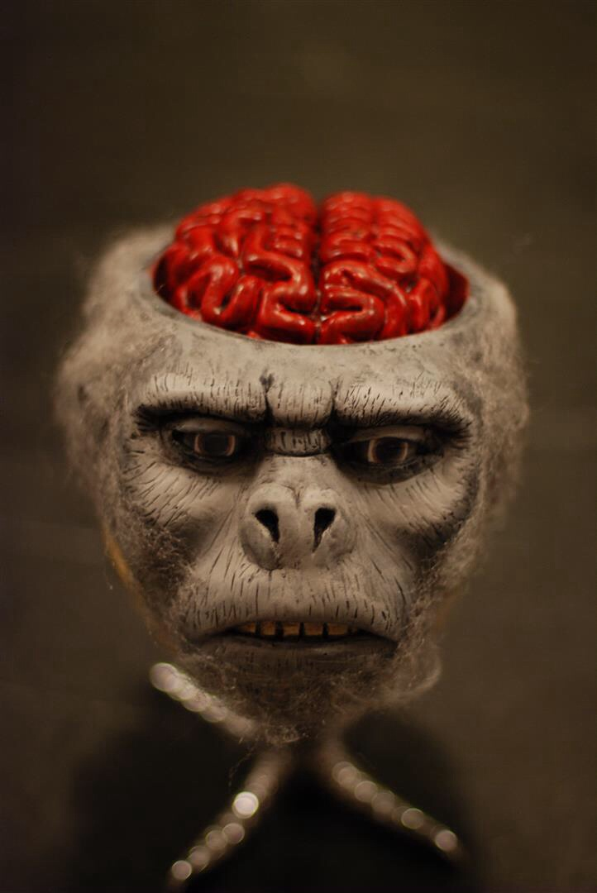

Chilled Monkey Brains

Chilled monkey brains, served inside the skull of a monkey. Enjoy!
Ingredients
- Detached monkey head (previously prepared or store-bought)
- Salt and Pepper to taste
Steps
- Carefully create an incision at the head of the monkey's skull.
- Carefully cut a 1/4 gap at the head of the skull using the incision cut.
- Drain excess fluids from the brain cavity. Be careful not to stain the fur on the monkey's head.
- Add salt and pepper to taste.
- Store in refrigerator for 4 hours.
- Serve.